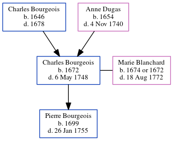

Charles Bourgeois 1672 - 1748
[ Home ] | [ Calendar ] | [ Surnames Index ] | [ Census Index ] | [ Family History ]The child of Charles Bourgeois and Anne Dugas, Charles Bourgeois, the 8 times great-grandfather of Michele Copp (née Phillips), was born in Beau Bassin (now Amherst) Bay of Fundy in 1672 and had 1 child with Marie Blanchard: Pierre1.
He died on May 6, 1748 in Beaubassin, Comberland, Nova Scotia, Canada.
Parents
- Charles was born in 1646
- Anne was born in 1654
Children
- Pierre was born in 1699
Citations
- U.S. and International Marriage Records, 1560-1900 Online publication - Provo, UT, USA: The Generations Network, Inc., 2004.Original data - This unique collection of records was extracted from a variety of sources including family group sheets and electronic databases. Originally, the information was deriv
Family Tree
Generated by ged2site. Last updated on Jun 6, 2024